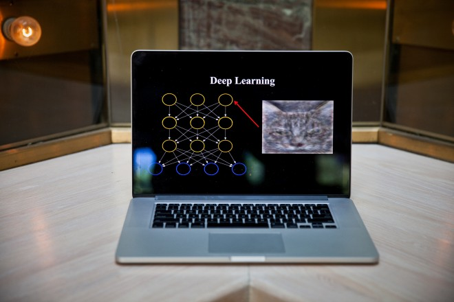

Deep Learning is a new area of Machine Learning research, which has been introduced with the objective of moving Machine Learning closer to one of its original goals: Artificial Intelligence
Intelligence
The notion of intelligence can be defined in many ways. Here we define it as the ability to take the right decisions, according to some criterion (e.g. survival and reproduction, for most animals). To take better decisions requires knowledge, in a form that is operational, i.e., can be used to interpret sensory data and use that information to take decisions.
Artificial Intelligence
Computers already possess some intelligence thanks to all the programs that humans have crafted and which allow them to “do things” that we consider useful (and that is basically what we mean for a computer to take the right decisions). But there are many tasks which animals and humans are able to do rather easily but remain out of reach of computers, at the beginning of the 21st century. Many of these tasks fall under the label of Artificial Intelligence, and include many perception and control tasks. Why is it that we have failed to write programs for these tasks? I believe that it is mostly because we do not know explicitly (formally) how to do these tasks, even though our brain (coupled with a body) can do them. Doing those tasks involve knowledge that is currently implicit, but we have information about those tasks through data and examples (e.g. observations of what a human would do given a particular request or input). How do we get machines to acquire that kind of intelligence? Using data and examples to build operational knowledge is what learning is about..
Example: What Deep Learning and Machine Learning means for Future of Search Engine Optimization
Neural Networks
In machine learning and cognitive science, artificial neural networks (ANNs) are a family of statistical learning models inspired by biological neural networks (the central nervous systems of animals, in particular the brain) and are used to estimate or approximate functions that can depend on a large number of inputs and are generally unknown. Artificial neural networks are generally presented as systems of interconnected "neurons" which send messages to each other. The connections have numeric weights that can be tuned based on experience, making neural nets adaptive to inputs and capable of learning.
In simple : replications of neurons in the brain programmatically. To create technologies never have imagined.
Deep Neural Networks
Deep learning (deep machine learning, or deep structured learning, or hierarchical learning, or sometimes DL) is a branch of machine learning based on a set of algorithms that attempt to model high-level abstractions in data by using model architectures, with complex structures or otherwise, composed of multiple non-linear transformations
Deep learning is part of a broader family of machine learning methods based on learning representations of data. An observation (e.g., an image) can be represented in many ways such as a vector of intensity values per pixel, or in a more abstract way as a set of edges, regions of particular shape, etc.. Some representations make it easier to learn tasks (e.g., face recognition or facial expression recognition) from examples. One of the promises of deep learning is replacing handcrafted features with efficient algorithms for unsupervised or semi-supervised feature learning and hierarchical feature extraction.
Research in this area attempts to make better representations and create models to learn these representations from large-scale unlabeled data. Some of the representations are inspired by advances in neuroscience and are loosely based on interpretation of information processing and communication patterns in a nervous system, such as neural coding which attempts to define a relationship between the stimulus and the neuronal responses and the relationship among the electrical activity of the neurons in the brain.
Various deep learning architectures such as deep neural networks, convolutional deep neural networks, deep belief networks and recurrent neural networks have been applied to fields like computer vision, automatic speech recognition, natural language processing, audio recognition and bioinformatics where they have been shown to produce state-of-the-art results on various tasks.